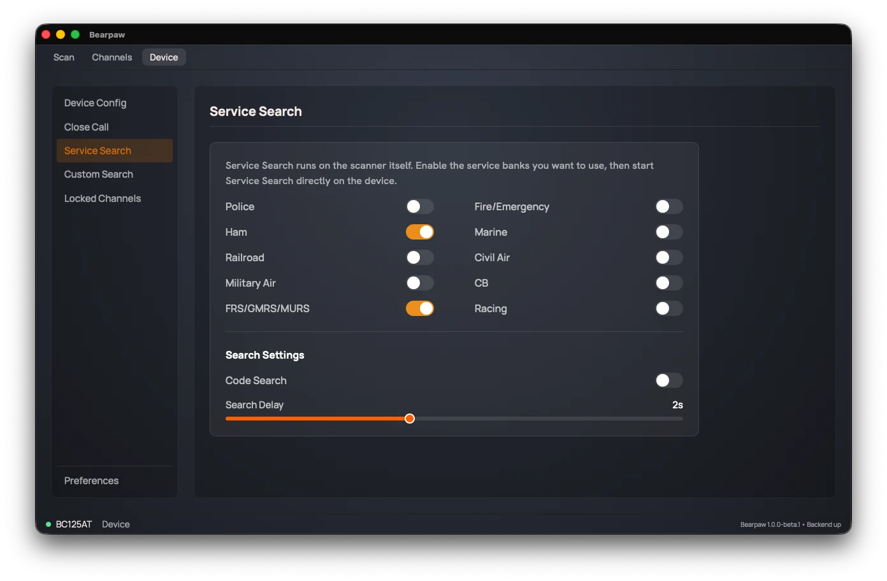

Service Search
The BC125AT has built-in, factory-set frequency ranges for common radio services. Service Search sweeps those ranges without you programming any channels.

You configure the services here, then press the search button on the radio itself to run the search.
Ten on/off switches, one per service: Police, Fire/Emergency, Ham, Marine, Railroad, Civil Air, Military Air, CB, FRS/GMRS/MURS, Racing.
Search settings
Below the service switches, two search settings:
- Code Search: also decode CTCSS/DCS tones on the signals it finds.
- Search Delay: 0 to 5 seconds. How long the scanner pauses on a found signal after it stops, before resuming.